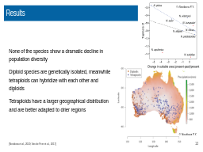
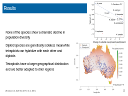
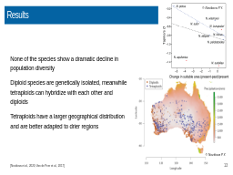
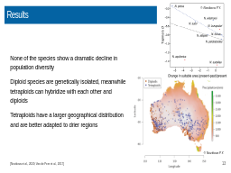
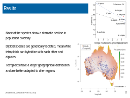

Click here to start
Table of contents
Slide 1
Literature
Introduction
Causes and genetic consequences
Paleopolyploid events
The incidence of polyploidy in plants
Plants: physiological changes
The incidence of polyploidy in animals
Genomic networks
Amphibians Fish
Slide 11
Material and methods
Results
Conclusion
References
Download presentation

 


